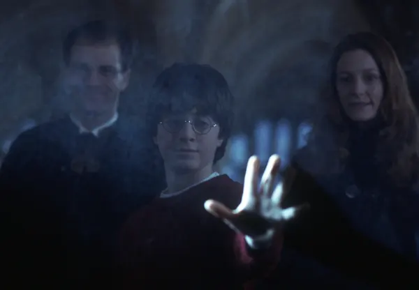
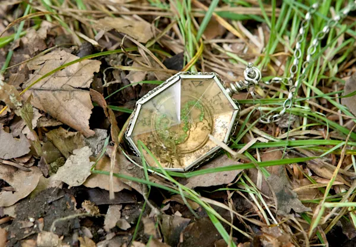

A useful charm for bringing objects to the caster, the Summoning Charm could be used on things as well living creatures. In order for the spell to work the castor had to visualise the item clearly in their mind. Any distraction would make the spell ineffective. Harry mastered the spell after much practice in preparation for the second task of the Triwizard Tournament.

The Potter family were an old wizarding family stemming back many decades, but became particularly well-known when Lord Voldemort targeted Lily and James Potter and their son Harry, who was famously responsible for the Dark Lord's downfall. The Potter family could be traced back a twelfth-century wizard, Linfred of Stinchcombe, who made money inventing magical cures and remedies, a feat replicated by Fleamont Potter, whose invention of Sleekeazy's Hair Potion was sold for a vast profit. Linfred's son, Hardwin married into the Peverell family and inherited the Invisibility Cloak - a remarkable artefact that was unlike any other of its kind - and would ultimately make its way down to Harry Potter.
Kowalski Quality Baked Goods was located at 443 Rivington Street in New York. Owning a bakery was a long time dream of Jacob Kowalski only made possible when he became embroiled in an adventure with Newt Scamander and was left a hefty reward in valuable, silver Occamy egg shells. Specialising in Polish delicacies, the bakery was a great success and was renowned for its imaginative pastries - the forms of which were based on magical beasts that Jacob had encountered.

A Slytherin family heirloom, this golden locket was first owned by Salazar Slytherin and eventually came into the possession of the Gaunt family. Notable for its green glittering 'S' on the front, the locket was sold by Merope Gaunt when her father and brother were sent to Azkaban. It eventually made its way into the hands of Tom Riddle, who used it for darker purposes, transforming it into a Horcrux. The Slytherin locket was shown to put dark thoughts into the wearer's mind.